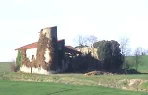
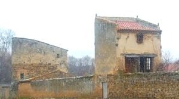
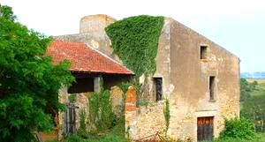
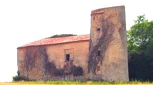
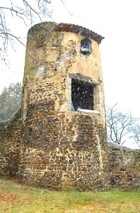
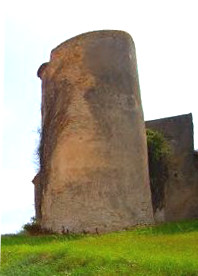
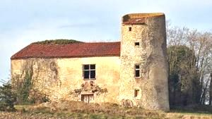

Recensement Jean-Claude Truffet
| Département | 63 — Puy-de-Dôme |
| Canton | Sauxillanges |
| Commune | St-Martin-des-Pleins |
| Type d'édifice | Vestiges |
| Période d'origine | XVI |







St-MARTIN le Plains. En 1537, passe à Marguerite de Saint-Martin, veuve de Jean de Chaslus, seigneur de Cordès. Vers 1560, Marthe, fille de Jacques de Chaslus, apporte la seigneurie en dot à Gabriel de Serment, écuyer, seigneur de Condat, Montrodès et Le Montel. Peu après 1612, sa fille, Diane de Serment est dite dame de Montrodès. En 1644, le Château passe par mariage au baron Henri de Salers. En 1666, le baron est condamné pour meurtre et sa baronnie confisquée par le roi. Mais ses châteaux et seigneuries de St-Martin des Plains et du Montel restent à sa veuve Diane de Serment. En 1674, celle-ci est dite dame de Saint-Martin. En 1689, Claude Panel est chatelain de Saint-Martin et fondé de procuration de Louis de Guilhem, seigneur des Aiguilles. BETHEL Vers 1400, Urbain d'Oradour, chevalier, est seigneur d'Oradour, Béthel et Malbet. En reconnaissance pour ses qualités de chevalier et pour sa bravoure dans la guerre contre les Anglais, Bertrand V de la Tour lui fait épouser, Marguerite de la Tour. Vers 1436, Robert d'Oradour est seigneur de Lemandié. Béthel et Le Colombier, fiefs situés dans la châtellenie de Nonette. Jacques d'Oradour, petit-fils de Robert, est seigneur de St-Gervazy et Béthel en 1532. En 1557 Jacques d'Oradour, chevalier, seigneur de St-Gervazy, épouse Claudia, héritière du baron Antoine de Saillant. En 1572, Jacques d'Oradour habite le château de Béthel. En 1593, Anne d'Oradour est dame de Béthel. COLOMBIER, Avant 1406, lors de son mariage avec Marguerite de La Tour, Urbain d'Oradour est dit seigneur de Béthel et du Colombier. En 1436 et 1444, Robert d'Oradour est seigneur de Béthel et du Colombier. En 1490, Henri du Breuil seigneur du Colombier, épouse Isabeau de Villeret. En 1519, sa fille Anne porte le château par mariage à Jean de la Salle, chevalier, seigneur de la Volpilière. Vers 1625, le château est à la famille de Faydides qui le vend en 1690 à Claude Gilbert Aldebert de Seveyrac. En 1748, il passe par mariage à François Hector de Simiane.
Château de Saint-Martin le Plains du XVIe siècle, reste d'une enceinte quadrangulaire à tours circulaires d'angle, il en subsiste deux percés de canonnières horizontales, accolés à un logis de 3 niveaux à retour d'aile, desservi à l'angle intérieur par une tourelle polygonale d'escalier.
Château de Béthel situé à deux km du bourg par un chemin (entre Orsonnette et Les Pradeaux). Enceinte quadrangulaire à flanquements circulaires d'angle, il en subsiste deux accolés à un logis de deux niveaux et demi. Au XIXe siècle logis et tours ont été surhaussés et remaniés. Château du Colombier situé au nord ouest de St Martin des Plains. Enceinte quadrangulaire à tours circulaires d'angles, il reste une grosse tour cylindrique coiffée en appentis et transformée en pigeonnier.
seigneur d'Oradour
"
Vestiges du château de Saint-Martin le Plains, château de Bethel et du Colombier